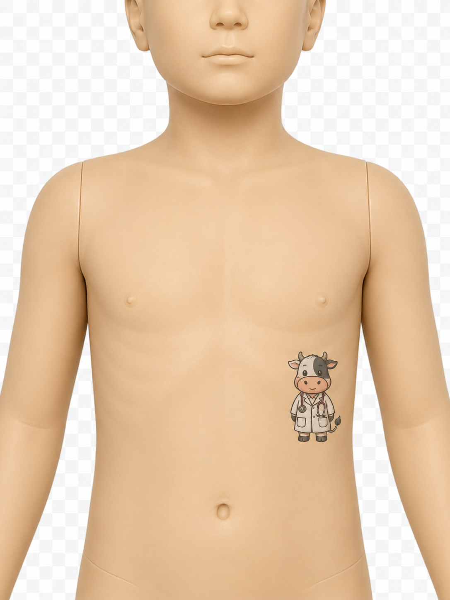

Auscultation simulator
Pediatric Heart Sounds
Select a case, then click an auscultation point on the manikin to play the corresponding heart sound.
Auscultation points
Selected case: —

Click a point to play audio.
Dataset attribution
The heart sound recordings and associated case information used in this simulator are derived from the CirCor DigiScope Phonocardiogram Dataset , made publicly available through PhysioNet. The dataset files are distributed under the Open Data Commons Attribution License v1.0 .
This educational simulator is an independent teaching tool and is not affiliated with or endorsed by the CirCor dataset authors or PhysioNet.